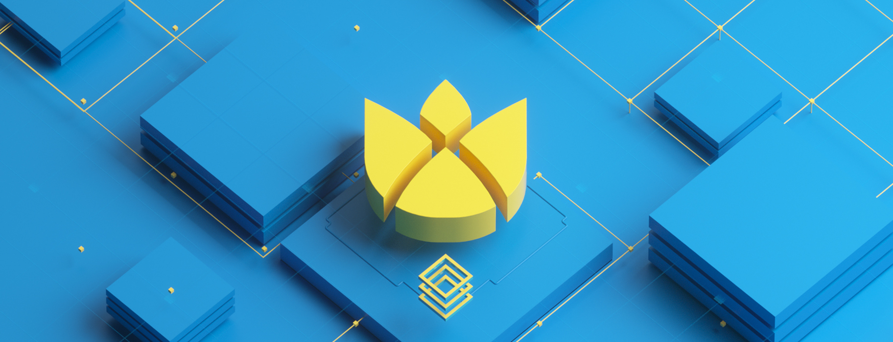
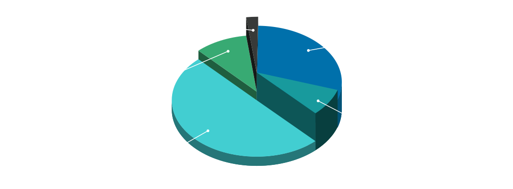

<template>
  <div class="landing-page animated-page au-animate">
    <div
      class="countdown"
      if.to-view="(msUntilCanLockCountdown() <= 0) & signal:'secondPassed'"
    ><a
        if.to-view="inGovernancePeriod()"
        class="count"
        href="https://alchemy.daostack.io/${daoAddress}"
        target="_blank"
      >Click here to take part in the dxDAO</a>
      <a
        else
        class="count"
        route-href="route: stake-for-your-vote"
      >Click here to take part in the dxDAO</a>
    </div>

    <div
      class="countdown"
      else
    ><span class="count">${msUntilCanLockCountdown() | timespan:countdownUnits() & signal:'secondPassed'}</span>
      until you can take part in the dxDAO</div>


    <!-- <nav class="navbar navbar-expand-lg flex-column flex-sm-row delayed-warning-section">
      <div class="body">
        The dxDAO launch has been delayed for security reasons, in order to run an additional bug bounty program and audit on the codebase.
        <p style="margin-top:1rem;">
          Learn more on the <a
            href="https://blog.gnosis.pm/security-update-on-the-dxdao-bug-bounty-52cec0f02cde"
            target="_blank"
          >blog post here</a>.
        </p>
      </div>
    </nav> -->

    <div class="main-content">
      <div class="main-header">
        
      </div>

      <div class="primary-section">
        <div class="row">
          <div class="col-md-8 offset-md-2 col-lg-6 offset-lg-3">
            <div class="icon"></div>

            <div class="header">Toward Super-Scalable Organizations</div>

            <div class="body-text">
              <p>DAOs create a new design space for organizing globally.</p>
              <p>Within this design space, not only scalable but super-scalable organizations can be established, meaning that such an organization's ability to efficiently coordinate actually increases as it grows.</p>
              <p>Super-scalable organizations have no hierarchies and support transparency. They are organizations which provide market mechanisms to steer toward quality decisions and guide collective attention at any scale, allowing their stakeholders to achieve both modest tasks and megaprojects alike using the Holographic Consensus mechanism designed by <a
                  href="https://daostack.io"
                  target="_blank"
                >DAOstack</a>.</p>
              <p style="font-weight: bold">The dxDAO is a first attempt to create such an organization, starting ${lockingPeriodStartDate | date:'dayofmonth'} ${lockingPeriodStartDate | date:{ format: 'amPmHourTz' }}.</p>
            </div>
          </div>
        </div>
        <div class="btn-container">
          <a
            class="btn btn-primary"
            style="margin-right:.5rem"
            href="https://github.com/gnosis/dx-daostack/blob/master/dxdao-whitepaper-v1.pdf"
            target="_blank"
          >White Paper</a>
          <a
            class="btn btn-primary"
            style="margin-left:.5rem"
            href="https://blog.gnosis.pm/step-by-step-guide-to-earn-reputation-for-the-dxdao-with-the-gnosis-safe-cc54f3a93f3e"
            target="_blank"
          >Walkthrough</a>
        </div>
      </div>
      <div class="secondary-sections">
        <div class="row">
          <div class="col-md-12 col-lg-5 offset-lg-1">
            <div class="section green">
              <div class="header">The long-term mission</div>
              <div class="body-text">
                <p>The degree of decentralization in any system encompasses not only its technical architecture, but extends to system governance itself. Today, there is a clear need for decentralized governance of decentralized software protocols. Responding to this need, the dxDAO is a next-generation decentralized autonomous organization (DAO) for community governance of software protocols.</p>
                <p>The dxDAO is a novel, yet humble experiment toward the ends of human coordination. We hope that it is one of many such experiments, toward the aim of cooperatively facing common crises of stewardship on a more global level.</p>
              </div>
            </div>
          </div>

          <div class="col-md-12 col-lg-5">
            <div class="section darkblue">
              <div class="header">What is there to govern?</div>
              <div class="body-text">
                <p>The idea for the dxDAO initially arose from Gnosis' design and development of a permissionless trading protocol, the <a
                    href="https://dutchx.readthedocs.io"
                    target="_blank"
                  >DutchX</a>, which has proved its viability as critical infrastructure for decentralized finance (DeFi) applications, providing an on-chain price oracle and facilitating large volume trades without slippage. To support community governance, upgradeability, and the network effects necessary for the DutchX, it became clear a governance mechanism such as the dxDAO would be essential.</p>
                <p>Governance of the DutchX, however, is a start point not an endpoint. The dxDAO may choose to fill a crucial gap in web 3.0 governance. Its lifelong trajectory will ultimately be decided by what community stakeholders deem to be the most valuable pursuits.</p>
              </div>
            </div>
          </div>
        </div>
        <div class="row">
          <div class="col-md-12 col-lg-5 offset-lg-1">
            <div class="section bluegreen">
              <div class="header">How can you participate in the dxDAO?</div>
              <div class="body-text">
                <p>There will be a 30-day initialization process, called the Vote Staking Period, during which participants can earn Reputation (voting power) in the dxDAO. Anyone can earn Reputation in four categories through mechanisms designed to achieve a large degree of decentralization amongst dxDAO Stakeholders. Participants in the Vote Staking Period will be competing against each other to earn Reputation.</p>
                <p>The more Reputation held, the greater one’s voting power in the dxDAO governance phase.</p>
              </div>
            </div>
          </div>

          <div class="col-md-12 col-lg-5">
            <div class="section lightblue">
              <div class="header">What is the governance process?</div>
              <div class="body-text">

                <p>After the Vote Staking Period, the dxDAO governance phase begins. In the open-ended governance phase, the dxDAO has full autonomy—over its processes and the assets it controls. The dxDAO will use the DAOstack’s Genesis Protocol for decision making.</p>
                <p>Anyone can submit a proposal, GEN token holders can predict a proposal’s success, but only Reputation Holders can vote on a proposal. To learn more, see the blog post <a
                    href="https://blog.gnosis.pm/a-brief-discussion-of-the-protocol-governing-the-dxdao-7331407a2555"
                    target="_blank"
                  >A brief discussion of the protocol governing the dxDAO</a>.</p>
              </div>
            </div>
          </div>
        </div>
      </div>

      <div class="pie-chart-section">

        <div class="row">
          <div class="col-md-12 col-lg-10 offset-lg-1">

            <div class="pie-title">How much and how is Reputation exactly distributed?</div>

            <compose
              view-model="./schedule/schedule"
              model.to-view="scheduleModel"
            ></compose>

            <div class="pie-chart">
              
              
              
              <div class="footer">Participants may be part of more than one group, with Reputation accumulating additively.</div>
            </div>
          </div>
        </div>
      </div>
      <div class="join-section">
        <div class="body">Join the discussion in this <a
            href="https://daotalk.org/c/daos/dx-dao"
            target="_blank"
          >Forum</a> | <a
            href="https://t.me/dxDAO"
            target="_blank"
          >Telegram</a></div>
      </div>
    </div>
  </div>
</template>
